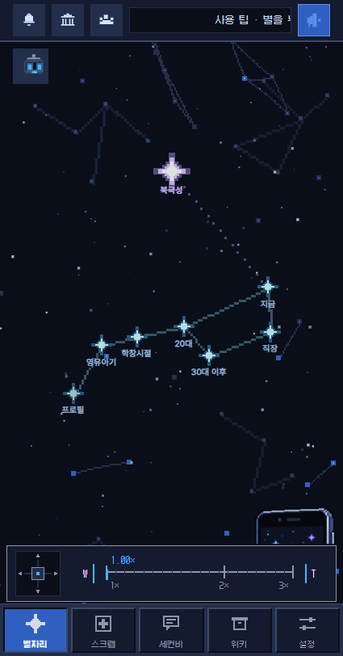
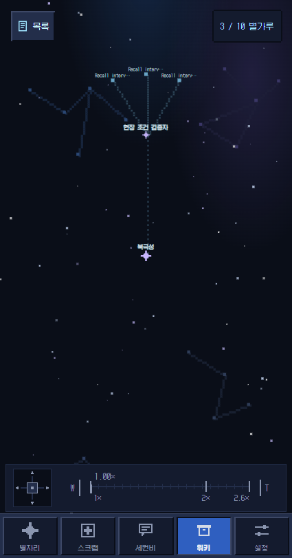

카메라 정밀 조작 UI 리뷰 적용
홈·기록·위키의 공용 망원경 컨트롤을 더 얇고 명확하게 조정했다. 조작 중에는 활성 상태, 손을 떼고 1.2초 뒤에는 유휴 상태로 돌아간다.
2026-09-26 05:04:16 KST · localhost:8081 · codex/observatory-dashboard-260925
70px
패널 높이 · 기존 78px 대비 약 10%
44×44
W/T 최소 터치 영역 유지
1.2초
조작 종료 후 유휴 복귀
3화면
홈·기록·위키 브라우저 검증
변경 사항
- 조이스틱의 네 방향에 2픽셀 방향 노치를 배치하고 선택 방향을 청록색으로 표시했다.
- W/T는 레일 양끝 캡처럼 보이게 했으며 터치 영역은 줄이지 않았다.
- 실시간 배율 값을 마커 위로 옮기고 연결선을 더했다.
- 패널 안팎의 세로 여백을 줄였다. 활성 테두리·눈금·값은 유휴 상태보다 밝다.
브라우저 증거
425·320·768px 홈에서 높이 70px와 W/T 44px 이상을 확인했다. 기록·위키의 이동/줌, 터치·키보드·취소·포커스 해제, 반복 라쳇 소리도 확인했다. 페이지 오류는 0건이었다.


검증 및 남은 주의점
타입 검사, 관련 회귀 테스트, Android export가 통과했다. 전체 verify의 앞선 검사는 통과했으나 병렬 Jest에서 기존 임시 파일 경합이 재현됐다. 직렬 Jest는 797개 스위트, 10,077개 테스트 모두 통과했다.
Expo 의존성 검사에는 기존 권장 버전 불일치 20건과 doctor 3개 실패가 남아 있다. 기존 저장소의 다른 미커밋 변경은 정리하거나 커밋하지 않았다.